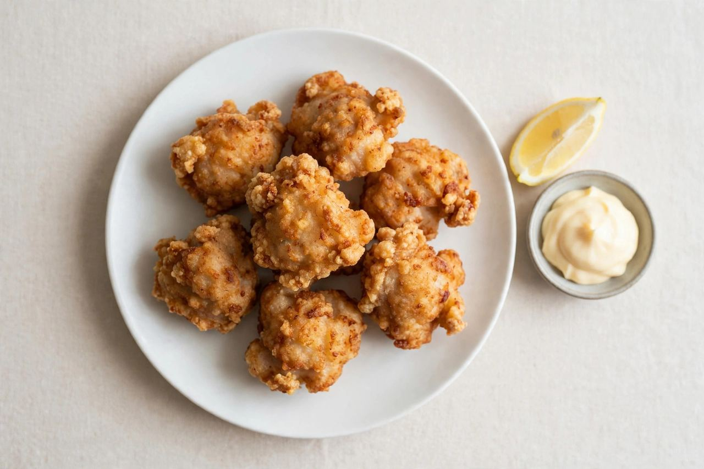

What is karaage?
Japanese fried chicken — bite-sized thigh pieces marinated in soy, ginger, and garlic, coated in potato starch, fried to a light crisp. Juicier and lighter than anything with "crispy" in the English name.
Why it's different from KFC
- Marinated first — the flavor is in the meat, not just the crust.
- Potato starch, not batter — a thin, delicate coating instead of a thick crunchy shell.
- Thigh meat — dark meat stays juicy; this is non-negotiable in Japan.
- Bite-sized — made for chopsticks and sharing.
How it's served
- As a side: with ramen, in izakaya (the #1 izakaya order alongside edamame).
- On rice: からあげ丼 karaage-don — fried chicken rice bowl.
- In bento: the anchor of countless convenience-store and department-store lunch boxes.
- With lemon and mayo — squeeze, dip, repeat.
Where to find the best
Specialty shops exist (search からあげ専門店), but honestly: izakaya karaage is consistently excellent, and even konbini versions (Lawson's Karaage-kun, FamilyMart's Famichiki) are worth trying. Japan doesn't really do bad karaage.
Allergens and dietary check: is karaage safe for you?
What a typical karaage contains. Recipes vary by shop, so use this to know what to ask, then confirm with the staff. Tap an allergen for its Japanese restaurant card.
| Allergen / diet | Contains? | Why |
|---|---|---|
| Wheat / gluten | Yes | Soy sauce marinade; many coatings mix in wheat flour. |
| Soy | Yes | Soy sauce marinade. |
| Egg | Sometimes | Some recipes add egg to the marinade; mayo on the side is egg. |
| Sesame | Sometimes | Some shops use sesame oil in the marinade. |
| Fish / dashi | Rarely | Some marinades add dashi. |
| Dairy | Rarely | Not a usual ingredient. |
| Pork | No | Chicken, but often fried in the same oil as pork cutlets. |
| Vegetarian? | No | It is chicken; soy-meat karaage exists at some vegan shops. |
Several allergies? Build one card with our printable Japanese allergy card. Also see halal and vegetarian and vegan cards. This is travel information, not medical advice.
Common questions
Is it the same as tatsuta-age?
Close cousins. Tatsuta-age （竜田揚げ） is also marinated fried chicken — the marinade leans more soy-heavy. Most travelers won't taste the difference.
Chicken nanban?
チキン南蛮 is karaage's fancy sibling from Miyazaki: fried chicken with sweet vinegar sauce and tartar. If you see it, order it.
Is karaage gluten-free?
Usually not. The marinade uses soy sauce, which contains wheat, and many coatings mix wheat flour with potato starch. A few shops use only potato starch and gluten-free tamari, but that is rare.
Does karaage have egg?
Sometimes. Some recipes add beaten egg to the marinade, and karaage is often served with mayonnaise, which is egg-based.
What oil is karaage fried in?
Usually vegetable “salad oil”. The fryer is often shared with pork cutlets and tempura, so ask if cross-contact matters to you.
Ordering karaage at an izakaya? See our izakaya guide — and if it is your first konbini run, the konbini food guide covers Karaage-kun and Famichiki. Pair it with yakitori, the other izakaya staple.